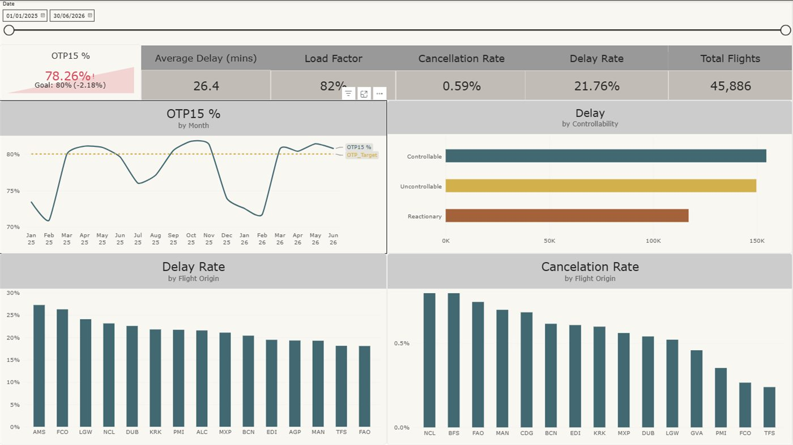
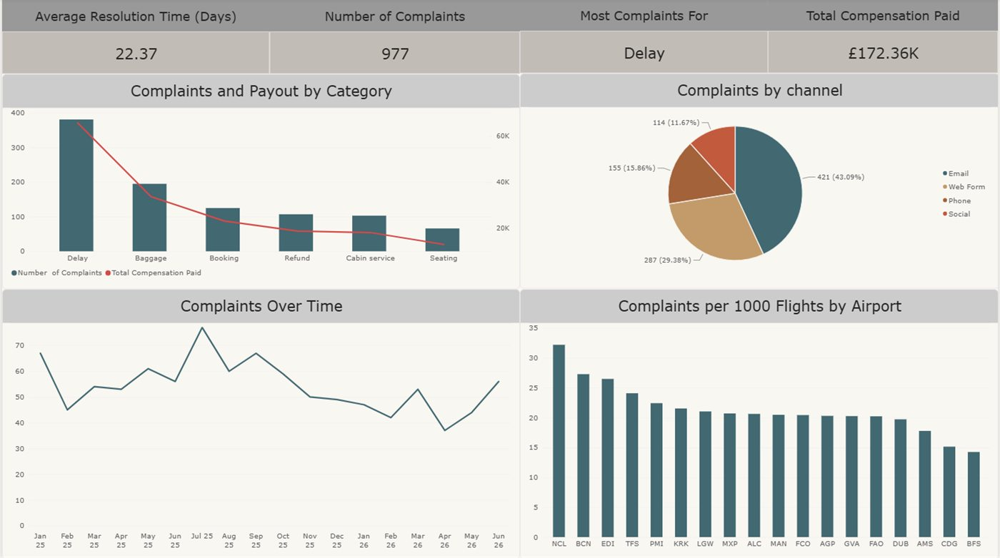
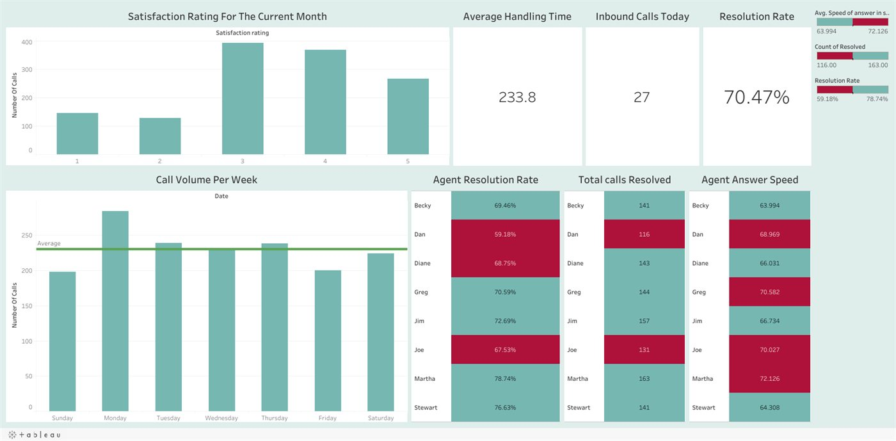
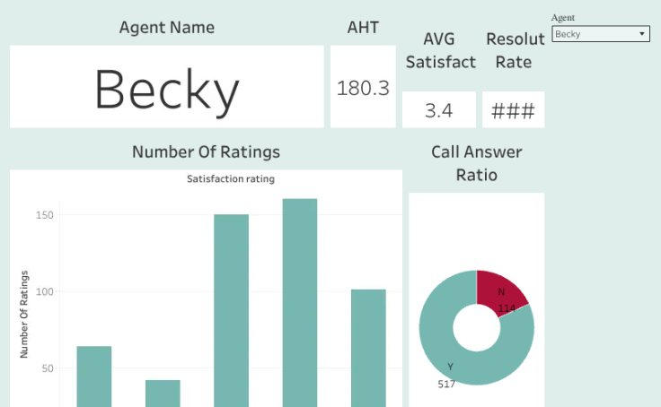
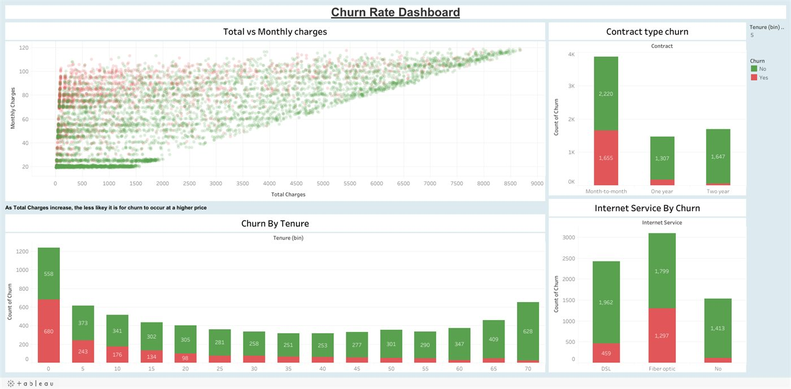
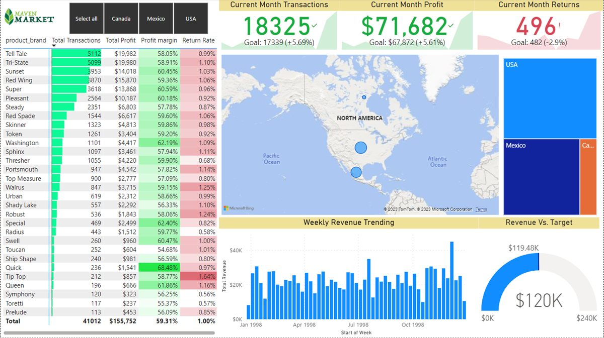
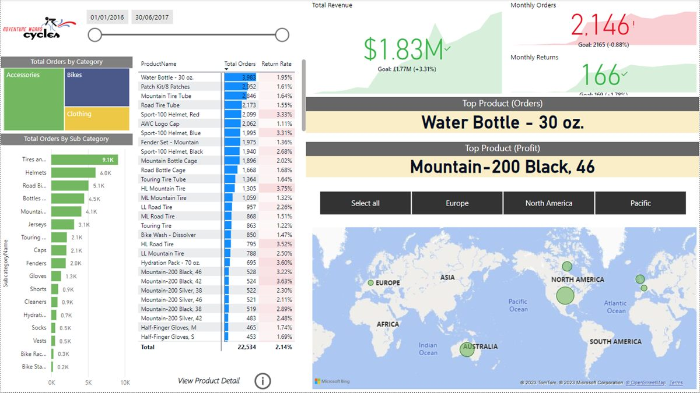

SQL
Queries that run on a schedule, not just one-offs for a question somebody asked once. Joins across a lot of tables, CTEs, window functions, and getting normalised source data into a shape you can actually report on.
Data Analyst · Manchester, UK
I'm Ibomeno. I sit in a four-person MI team at British Airways, covering a contact centre of a hundred-odd agents across phone, email and webchat. Most of my week goes on forecasting demand, writing the SQL underneath it, and keeping four dashboards running. One of them gets opened by team leaders before one-to-ones without anyone needing to ask me anything.
About
A lot of analysis ends up in a spreadsheet that gets opened once. The bit I care about is what happens after the numbers are right, which is whether the person who asked can make a decision with it in the meeting, without coming back to me for another version of the same thing.
In practice that's mostly forecasting. Historical contact flow goes in, volume patterns and shrinkage and occupancy get modelled out of it, and what comes back is a monthly agent requirement. Recruitment and shift planning are built on that number, so it needs to hold up. The rest of the week is SQL against the source systems and keeping the dashboards in a state where nobody has to ask me what a column means.
The only test I trust for a dashboard is whether people use it when I'm not there. One of mine gets opened before one-to-ones by agents and team leaders who have never once asked me how to read it, which I'm more pleased about than I probably should be. I've also automated enough of the recurring reporting in SQL and Excel to claw back about a day a week that used to go on prep.
I finished at Middlesex in 2021 with a First in Information Technology and Business Information Systems. Open to Data Analyst and Business Analyst roles at the moment, permanent or contract, Manchester or remote.
Skills
Grouped by what I use them for. No percentage bars, because I've never worked out what 80% at Excel is supposed to mean.
Queries that run on a schedule, not just one-offs for a question somebody asked once. Joins across a lot of tables, CTEs, window functions, and getting normalised source data into a shape you can actually report on.
Monthly agent requirement, built out of historical contact flow. Volume patterns, shrinkage and occupancy go in one end and recruitment and shift planning get a number they can staff against at the other.
Dashboards built around the decision somebody has to make, not around every field that happens to exist in the table. The ones I'm happiest with are the ones nobody has ever had to ask me about.
Still where most business analysis really happens, whatever anyone says. I build workbooks assuming somebody else will inherit them, so the structure stays consistent and nothing breaks the first time a row gets added.
Mostly for killing off reports that someone was rebuilding by hand every week. Parsing exports, reconciling formats that refuse to agree with each other, and catching the odd values before anyone downstream has to.
Requirements, stakeholder conversations, process mapping. A fair bit of it is sitting between the operational team and whoever has to build the thing, making sure both of them mean the same thing by the same word.
Pick a query. It runs against a small fake dataset sitting in the page.
Projects
All of it is public. The code sits on GitHub and the dashboards are live on Tableau Public, so you can go and poke at them. Open a card for the write-up or skip straight to the source.

Eighteen months of short-haul departures for a made-up UK carrier, built to see where punctuality actually goes. OTP15 came out at 78.26% against an 80% target, and the delay type that happens least often turned out to cost the most each time it does.
Three things everyone says about the NBA, checked against 12,000-odd player seasons. Do high-volume scorers give up efficiency, are players getting smaller, and which clubs actually produce the good ones. Two of the three answers came back the wrong way round.

The follow-up to the punctuality report, same carrier and same 18 months. I expected complaints to track delay. They don't. The correlation is 0.11 and three-quarters of complaints came from flights that left on time.

The team-level counterpart to the agent view: call volume against a rolling average, satisfaction distribution, and every agent ranked side by side on the same measures.

I own the equivalent of this at British Airways but the real one can't leave the building, so I rebuilt the thinking on public data. Handle time, satisfaction, resolution rate and answered-call ratio for one agent at a time. The idea is that a team leader opens it in the two minutes before a one-to-one.

Who leaves, and what they've got in common. Month-to-month customers churn at about forty per cent while anyone tied into one or two years barely moves. Fiber optic customers leave at roughly the same rate, which was the one I hadn't expected.

Three pages of Power BI tracking transactions, profit and returns against monthly targets across the USA, Canada and Mexico. Brand-level margin and return rate underneath, weekly revenue trending, and a gauge running against a $240K target.
Due diligence for investors looking at buying a rental chain. Who manages what, what the inventory is worth, which parts of the catalogue would hurt most if they walked out the door, and how much of the revenue rests on a handful of customers.

Built on the assumption an exec gives it about ten seconds. $1.83M revenue against target, orders and returns against goal, category performance. Everything else got pushed onto drill-through pages for product and customer detail.
Two tables, deaths and vaccinations, joined on country and date. What your odds looked like if you caught it, how much of each country had actually had it, and running vaccination totals built with partitioned window functions.
Two bonus schemes, same set of drivers. A $50 flat payment with four conditions attached, or $4 a trip with two. Working out which one costs less is the easy half. Working out which one would actually change what drivers do is the other half.
Pick rates, win rates and per-champion stats pulled apart in SQL. Mostly an excuse to look at whether the champions everyone picks are the ones actually winning games.
A season's worth of data worked through in Excel. Pivots, lookups and derived measures, laid out so somebody else could open it and follow what I did.
Teaches pandas, seaborn and matplotlib in short lessons, running actual Python in the browser through Pyodide. I built it because most tutorials assume you can hold an hour of context in your head at once, and some days I can't.
Worked solutions to business-scenario SQL problems. This is the practice behind everything else on this page, and I've left it public because the working seems worth showing as well as the finished thing.
No projects in that category yet.
All repositories on GitHub Interactive dashboards on Tableau Public
Experience
April 2023 — Present
British Airways · Manchester, UK
Analyst in a four-person MI function supporting a 100+ agent multi-channel contact centre across telephony, email and webchat.
Graduated 2021
Middlesex University — First Class Honours
Contact
Hiring, contract work, or just wanting to complain about dashboards nobody reads. All welcome.
Manchester, United Kingdom
Open to remote and hybrid roles.
keybindings
Mouse works fine too.